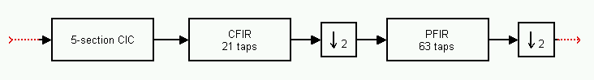
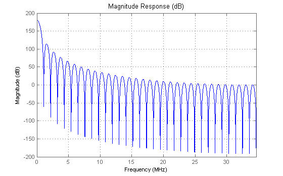
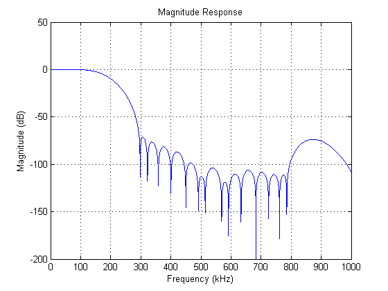
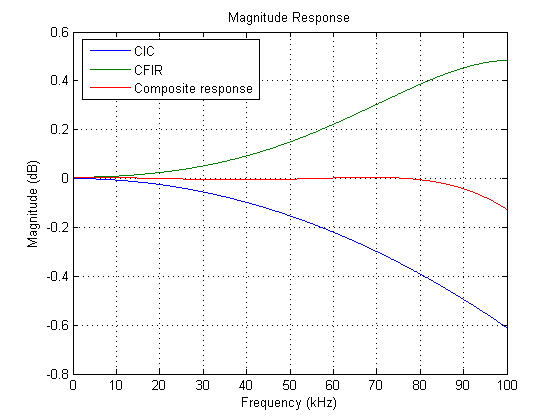
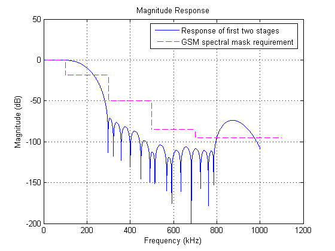
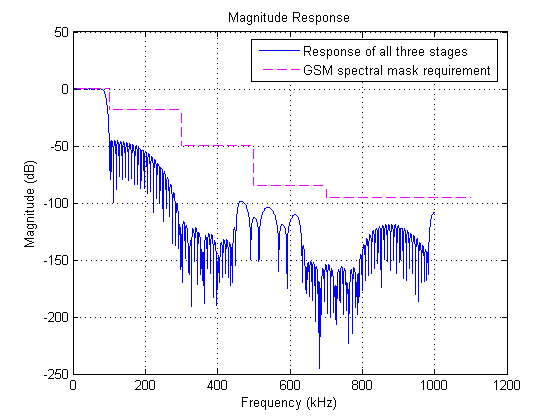
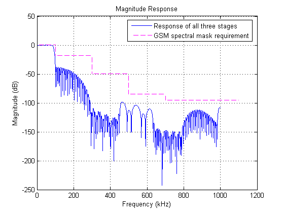

This demonstration shows the design and analysis of a multistage decimator used in a digital down-converter (DDC) for a GSM signal.
The design has been developed so that it can be implemented in a Graychip 4016 multi-standard quad DDC chip.
The 4016 implements the DDC with a three-stage decimator in addition to a numerically-controlled oscillator (NCO) and a mixer. In this demo, we concentrate on the decimator only. The multistage decimator is shown below:

It consists of a five-section Cascaded Integrator-Comb (CIC) decimator followed by two FIR decimators. The first decimator, CFIR, has 21 taps and provides decimation by two. The second decimator, PFIR, has 63 taps and also provides decimation by two.
The 4016 is a programmable DDC so it can be used with different communications standards. For GSM, the specifications are:
Input sample rate: 69.333248 MHz CIC decimation factor: 64 CFIR input sample rate: 1.083332 MHz PFIR input sample rate: 541.666 kHz PFIR output sample rate: 270.833 kHz Passband width: 80 kHz Passband ripple: < 0.1 dB peak-to-peak
The first stage of the decimator is a five-section CIC filter that provides a decimation factor of 64. This filter is attractive for high-speed implementations (the input signal in this case is 69.333248 MHz) because it is implemented without the use of multipliers. However, its magnitude response exhibits a significant droop in the passband which need to be corrected.
Hcic = mfilt.cicdecim(64,1,5); hfvt = fvtool(Hcic,'Fs',69.333248e6); set(hfvt, 'Color', [1 1 1]);
The CIC filter has a lot of passband gain, due to the additions and feedback within the structure. To normalize for this gain, we can cascade with a scalar with gain equal to the inverse of the CIC gain.
Hscalar = dfilt.scalar(1/gain(Hcic)); Hcicnorm = cascade(Hscalar,Hcic);
The second stage, CFIR, is used primarily to compensate for the droop in the CIC filter. It also provides some out of band attenuation. The function FIRCEQRIP can be used to design an FIR filter which compensates for sinc(x)^N type responses such as that of the CIC. In this case, because the CIC has five sections, we need to compensate for sinc(x)^5. We design a filter with a sloped stopband to provide the most attenuation we can for spectral replicas introduced due to the decimation.
Since the overall desired passband is 80 kHz, we compensate for the droop only in the interval 0 to 80 kHz. The CFIR operates at 1.083332 MHz. We have 21 taps to use, and we want to minimize the passband ripple as much as possible so that the overall design is within the 0.1 dB allowed. The design specifications we use are:
Fs = 1.083332e6; % Sampling frequency N = 20; % 21 taps Npow = 5; % Sinc power w = 0.5; % Sinc frequency factor Apass = 5.7565e-4; % 0.01 dB Astop = 0.01; % 40 dB Aslope = 60; % 60 dB slope Fpass = 80e3/(Fs/2); % 80 kHz passband-edge frequency cfir = firceqrip(N,Fpass,[Apass,Astop],'passedge','slope',Aslope,... 'invsinc',[w,Npow]);
The 4016 provides 16 bits to implement the CFIR filter. Before we create the second-stage decimator, we need to quantize the filter coefficients to 16 bits (Note that this code requires the Fixed-Point Toolbox).
cfirq = fi(cfir,true,16); Hcfir = mfilt.firdecim(2,double(cfirq));
We now see how the design has progressed so far. We create a cascade of the normalized CIC filter and the CFIR decimator.
We only look at the compounded response from 0 to 1 MHz since this encompasses most of our region of interest.
Notice that we need to pass in the sampling frequency of an equivalent overall filter in order to compute the analysis. For more information see Analysis of Multirate Filters.
H2stage = cascade(Hcicnorm,Hcfir); [Hf2stage,f] = freqz(H2stage,0:200:1e6,69.333248e6); plot(f*1e-3,20*log10(abs(Hf2stage))) grid on; title('Magnitude Response'); xlabel('Frequency (kHz)'); ylabel('Magnitude (dB)'); set(gcf, 'Color', [1 1 1]);
To look in detail at the passband response and how we have compensated for the droop, we compute the response of each stage up to 100 kHz along with the composite response.
f2 = 0:100:100e3; Hfcic = freqz(Hcicnorm,f2(:),69.333248e6); Hfcfir = freqz(Hcfir,f2(:),69.333248e6/64); % Notice different sampling freq Hf2stage = freqz(H2stage,f2(:),69.333248e6); plot(f2*1e-3,20*log10(abs([Hfcic,Hfcfir,Hf2stage]))); grid on; title('Magnitude Response'); xlabel('Frequency (kHz)'); ylabel('Magnitude (dB)'); legend('CIC','CFIR','Composite response',2); set(gcf, 'Color', [1 1 1]);
We can see that the droop in the passband has been eliminated very effectively with the CFIR filter.
In order to design the third stage, we look at the required GSM spectral mask and determine what specifications are required for the PFIR filter. We compare the design we have so far to the required mask. We obviously are far from meeting the spec. but this serves the purpose of giving us an idea of how we should design the PFIR filter. The code to draw the GSM mask is given at the end of this demo.
[Hf2stage,f] = freqz(H2stage,0:200:1e6,69.333248e6); plot(f*1e-3,20*log10(abs(Hf2stage))) grid on; title('Magnitude Response'); xlabel('Frequency (kHz)'); ylabel('Magnitude (dB)'); drawgsmmask legend('Response of first two stages','GSM spectral mask requirement') set(gcf, 'Color', [1 1 1]);
The mask requires an attenuation of 18 dB at 100 kHz. So we can try a simple equiripple lowpass filter. Once again we need to quantize the coefficients to 16 bits.
N = 62; % 63 taps Fs = 541666; % 541.666 kHz F = [0 80e3 100e3 Fs/2]/(Fs/2); A = [1 1 0 0]; pfir = firgr(N,F,A); pfirq = fi(pfir,true,16); Hpfir = mfilt.firdecim(2,double(pfirq));
Let us compare this new design with the required spectral mask.
H3stage = cascade(Hcicnorm,Hcfir,Hpfir); [Hf3stage,f] = freqz(H3stage,0:200:1e6,69.333248e6); plot(f*1e-3,20*log10(abs(Hf3stage))) grid on; title('Magnitude Response'); xlabel('Frequency (kHz)'); ylabel('Magnitude (dB)'); drawgsmmask legend('Response of all three stages','GSM spectral mask requirement'); set(gcf, 'Color', [1 1 1]);
At first glance, it seems that we meet the spec. However, close inspection of the passband ripple reveals that we don't meet the < 0.1 dB peak-to-peak requirement. We can increase the passband weight of the PFIR design in order to reduce the passband ripple.
W = [5 1]; % Weight the passband 5 times more than the stopband pfir = firgr(N,F,A,W); pfirq = fi(pfir,true,16); Hpfir = mfilt.firdecim(2,double(pfirq)); H3stage = cascade(Hcicnorm,Hcfir,Hpfir); [Hf3stage,f] = freqz(H3stage,0:200:1e6,69.333248e6); plot(f*1e-3,20*log10(abs(Hf3stage))) grid on; title('Magnitude Response'); xlabel('Frequency (kHz)'); ylabel('Magnitude (dB)'); drawgsmmask legend('Response of all three stages','GSM spectral mask requirement'); set(gcf, 'Color', [1 1 1]);
This does the trick and we have a three-stage decimator that meets the GSM spectral mask requirement.
% Code to draw GSM mask % function drawgsmmask(hfig) % % if nargin < 1, hfig = gcf; end % args = {'Color',[1 0 1],'LineWidth',1,'LineStyle','--'}; % line([0 100],[0 0],args{:}) % line([100 100],[0 -18],args{:}) % line([100 300],[-18 -18],args{:}) % line([300 300],[-18 -50],args{:}) % line([300 500],[-50 -50],args{:}) % line([500 500],[-50 -85],args{:}) % line([500 700],[-85 -85],args{:}) % line([700 700],[-85 -95],args{:}) % line([700 1100],[-95 -95],args{:})